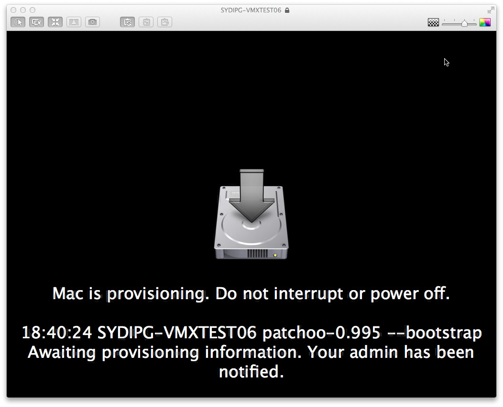
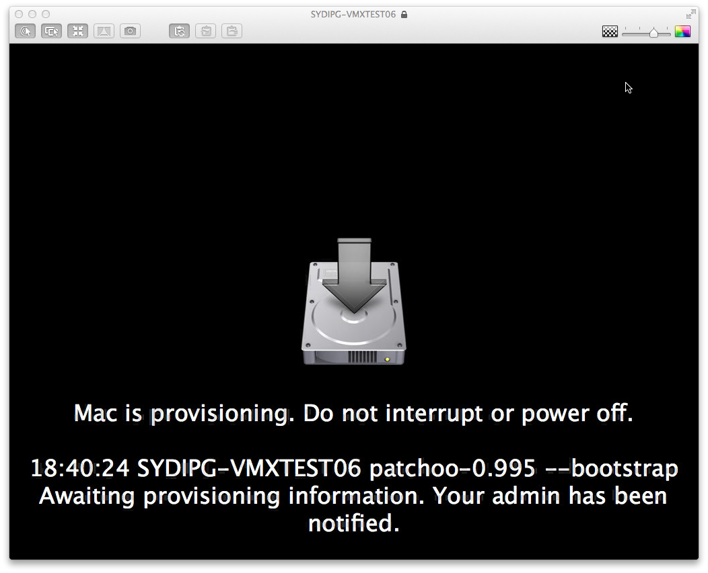
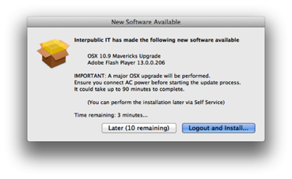
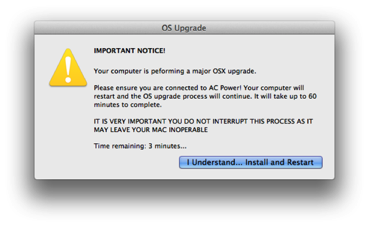
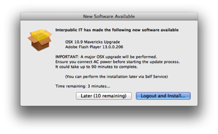
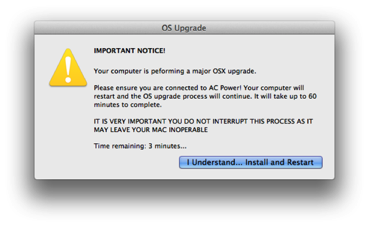

casper
Introducing Patchoo Deploy
19/09/14 13:08
Patchoo Deploy provides a framework for deployment and provisioning of new or re-imaged Macs.
As Casper admins are moving from an "image" based deployment workflows to policy based "thin provisioning" over the top of a factory Apple build, or a vanilla AutoDMGed Mac, PD aims to provide with the following:
• GUI for prompting for provisioning info
• JSS api read/write of provisioning info
• GUI / loginwindow lock during deployment
• allow Macs to be re-deployed / imaged, and base builds on persistent JSS data, rather than fake pkg receipts.
It supports a number of workflows
1. Mac OOTB
2. Setup Assistant
3. QuickAdd enroled via user or admin
4. User or admin can be prompted for the following provisioning information:
◦ ComputerName
◦ Custom Patchoo "Build" extension attribute (this can be used to scope, and fires a custom deploy-xxx trigger)
◦ Department
◦ Building
5. The JSS has provision details written.
6. A launchagent and bootstraphelper is written to drive the "bootstrap" process.
7. The Mac restarts
8. Bootstrap starts a loginwindow, the screen is locked.
9. Mac pulls provision information from the JSS.
10. Bootstraphelper fires -trigger deploy
11. All policies scoped to this trigger are run (scope geographic or department specific in this way).
12. Bootstraphelper fires -trigger deploy-xxxx (xxx being your build intentifier stored in the JSS ext attrib) - scope build specific policies.
13. Deploy process is finished.
14. Mac restarts and starts update loop.
15. A patchoo update session loops until Mac is fully patched.
16. Loginwindow unlocks.
You can leverage, all some or none of the provisioning details. You can support admin or enduser enrolment and provisioning. Macs that are imaged via Casper Imaging and don't have provisioning information go in to a "holdingpattern", touch a receipt, recon and you can scope a smart group to catch and notify administrators.
On enrollment complete trigger.

Prompted to confirm and set computername

The JSS is checked for an existing computername.

The Patchoo Build EA is read, and prompted for.

If no API user with write access is provided, an admin can set the provisioning details and enter their credentials.

Once done, the Mac restarts. Provision looks like this (the jamf log is tailed and displayed on a 3 sec interval)

If a Mac is enroled via a non-interactive method (Casper Imaging / Recon network scans) or prompt for info is disabled... the Mac may have no provisioning info. The holdingpattern is displayed, and the JSS is queried every 2 minutes.

This is very beta and the documentation is rough to say the least, but I do encourage you to play with it and provide feedback! If you are interesting is taking a look.
Jump on the "deploy" branch here - https://github.com/patchoo/patchoo/tree/deploy
Log issues or jump on the jamfnation thread. https://jamfnation.jamfsoftware.com/discussion.html?id=11849
As Casper admins are moving from an "image" based deployment workflows to policy based "thin provisioning" over the top of a factory Apple build, or a vanilla AutoDMGed Mac, PD aims to provide with the following:
• GUI for prompting for provisioning info
• JSS api read/write of provisioning info
• GUI / loginwindow lock during deployment
• allow Macs to be re-deployed / imaged, and base builds on persistent JSS data, rather than fake pkg receipts.
It supports a number of workflows
1. Mac OOTB
2. Setup Assistant
3. QuickAdd enroled via user or admin
4. User or admin can be prompted for the following provisioning information:
◦ ComputerName
◦ Custom Patchoo "Build" extension attribute (this can be used to scope, and fires a custom deploy-xxx trigger)
◦ Department
◦ Building
5. The JSS has provision details written.
6. A launchagent and bootstraphelper is written to drive the "bootstrap" process.
7. The Mac restarts
8. Bootstrap starts a loginwindow, the screen is locked.
9. Mac pulls provision information from the JSS.
10. Bootstraphelper fires -trigger deploy
11. All policies scoped to this trigger are run (scope geographic or department specific in this way).
12. Bootstraphelper fires -trigger deploy-xxxx (xxx being your build intentifier stored in the JSS ext attrib) - scope build specific policies.
13. Deploy process is finished.
14. Mac restarts and starts update loop.
15. A patchoo update session loops until Mac is fully patched.
16. Loginwindow unlocks.
You can leverage, all some or none of the provisioning details. You can support admin or enduser enrolment and provisioning. Macs that are imaged via Casper Imaging and don't have provisioning information go in to a "holdingpattern", touch a receipt, recon and you can scope a smart group to catch and notify administrators.
On enrollment complete trigger.
Prompted to confirm and set computername
The JSS is checked for an existing computername.
The Patchoo Build EA is read, and prompted for.
If no API user with write access is provided, an admin can set the provisioning details and enter their credentials.
Once done, the Mac restarts. Provision looks like this (the jamf log is tailed and displayed on a 3 sec interval)
If a Mac is enroled via a non-interactive method (Casper Imaging / Recon network scans) or prompt for info is disabled... the Mac may have no provisioning info. The holdingpattern is displayed, and the JSS is queried every 2 minutes.

This is very beta and the documentation is rough to say the least, but I do encourage you to play with it and provide feedback! If you are interesting is taking a look.
Jump on the "deploy" branch here - https://github.com/patchoo/patchoo/tree/deploy
Log issues or jump on the jamfnation thread. https://jamfnation.jamfsoftware.com/discussion.html?id=11849
Comments
0.9941 - Autopkg + JSS + Patchoo! & No more Mr. Nice Admin
25/07/14 10:11
AutoPKG + JSS-autopkg-addon + Patchoo
The holy grail of Casper software deployment?
If you don't know how cool AutoPKG is, you best get acquainted. In a nutshell, it will follow a recipe - check, download and repackage software for you, and with the very recent addition of a GUI it will do it at the touch of a button!
I am yet to get my hands dirty with the way it all works myself, but Allister Banks has built a processor for AutoPKG that every JAMF admin should be very excited about.
JSS-autopkg-addon effectively takes freshly built pkgs from autopkg, loads them onto your CDP and then creates the necessary smart groups and policies required for distribution. Cool beans! There has been a bit of talk on JAMF Nation and various channels about some of the shortcomings of Casper software deployment, that it's far too admin heavy. Automating a lot of the tedium around policy and smart group creation will go along way to solving this until JAMF revamps it's software deployment tools.
Calum Hunter has modified the policy and smart group template that JSS-autopkg-addon uses, and it can now dump these freshly created flat pkgs into your patchoo-dev track 100% ready for testing and deployment!
- AutoPKG recipe runs.
- Go to your dev/testing Mac client and start a Patchoo run click "Check for Updates" in Self Service.
- Test deployment and app function.
- Move update to beta.
- Move update to production.
A huge thanks to all the AutoPKG gang, all the Patchoo users and the entire Mac Admin community. We are all doing and ever more importantly, sharing some awesome work! We are the pirates taking over enterprise IT!
Nasty Mode
No more Mr. Nice Admin!
Until now, Patchoo has pseudo forced installations once the defer counter expired. There was only one button, but by design I didn't want a timeout to logout and install if a Mac was unattended.
Unfortunately, in this day and age of modern client management, those tricky users will find a loophole and do their darndest to not install software patches. We have a few users that are deliberately ignoring the all installations prompts. Catching them in the PatchooDeferCount10+ group and sending reminder emails from the JSS worked, sometimes, but at some sites I had to engage support technicians to physically walk to desks and talk with users. That's not a great use of anyone's time.
But in the end, it's too much admin work and there will always be people that don't have the 5 minutes a month it takes to patch their systems. Well, no more....
nastymode=true
When enabled (default), if the final forced update prompt is ignored, users are forcibly logged out and patches are installed. Users ARE allowed to save work and will be prompted. Stuck apps will pause the logout process, but it's persistent and will keep quitting apps until users are logged out.
If you are in the same situation, addressing the issue as a security and compliance matter is the best way to allay complaints. We are a public US company and must comply with SOX, even if it sometimes can be slightly inconvenient for our staff.
Get the latest commit
Licensing
You'll also notice a long overdue license file in the repo as well. Patchoo is released under Apache 2.0.
I'm no fancy big city lawyer, but this pretty much means you can use it how you want. I've had some great interest and been surprised at some of the really cool companies that are using it (most I can't mention unfortunately). Hopefully this means a few more with more stringent legal requirements can use it too!

If you'd like to contribute please feel free to reach out, or get on Github and submit pull requests!
0.994 - fixes & major OSX Upgrades
08/07/14 10:09
Patchoo 0.944 has been pushed and fixes handling of zipped pkg bundles on Casper 9. I've only recently migrated to the new 9 format (don't ask) and there was a bug when looking up zipped pkg friendly names in the JSS.
Changes in this release:
Did you know you can perform major OSX upgrades via Patchoo? By using createOSXInstallPKG and patchoo you can provide as convenient admin hands-off major OSX upgrade deployment to 10.9 (or 10.10) via Casper.

Here's a great tip!
Use a smart group to scope your deployment, and utilise nested groups to release it to clients as you require. Some organisations may have legacy enterprise software which may not be supported by the latest release of OSX. Instead of doing a blanket upgrade to all clients you can do the following:
Scope the patchoo requirements like so:
Cached Pkg does not have: OSXInstall10.9.3.pkg.zip
OS is not like, 10.6,10.9, 10.10
And then you can setup a static computer group (update10.9-manual) to add Macs you wish to upgrade to.
Group them in ( ) with OR, and you can add an entire department or office smart group to deploy Mavericks (or Yosemite) to a all computers without further admin interaction.
Once they are scoped correctly (make sure you check!), you might like to send an email direct from the JSS advising users of the impending upgrade and what to expect. Don't have your JSS populated with your user's directory information and email addresses? Don't worry, I can help there too.
Users receive updates in the same way they usually do, but are prompted additionally that the update requires AC power and will take up to 90 minutes.

For more information please read the documentation here. Deploying Major OSX Upgrades
Changes in this release:
- correctly handle and lookup zipped pkg bundle info from the JSS.
- improvements in OSX upgrades using createOSXInstallPKG
- fixed a small UI discrepancy in the OSX upgrade prompts
- quoted api credentials handle special chars in passwords.
Did you know you can perform major OSX upgrades via Patchoo? By using createOSXInstallPKG and patchoo you can provide as convenient admin hands-off major OSX upgrade deployment to 10.9 (or 10.10) via Casper.
Here's a great tip!
Use a smart group to scope your deployment, and utilise nested groups to release it to clients as you require. Some organisations may have legacy enterprise software which may not be supported by the latest release of OSX. Instead of doing a blanket upgrade to all clients you can do the following:
Scope the patchoo requirements like so:
Cached Pkg does not have: OSXInstall10.9.3.pkg.zip
OS is not like, 10.6,10.9, 10.10
And then you can setup a static computer group (update10.9-manual) to add Macs you wish to upgrade to.
Group them in ( ) with OR, and you can add an entire department or office smart group to deploy Mavericks (or Yosemite) to a all computers without further admin interaction.
Once they are scoped correctly (make sure you check!), you might like to send an email direct from the JSS advising users of the impending upgrade and what to expect. Don't have your JSS populated with your user's directory information and email addresses? Don't worry, I can help there too.
Users receive updates in the same way they usually do, but are prompted additionally that the update requires AC power and will take up to 90 minutes.

For more information please read the documentation here. Deploying Major OSX Upgrades
Mavericks & Yosemite Yup!
17/06/14 16:05

I love cocoaDialog, but it seems that Mavericks and Yosemite don't as much. It was always going to be a risk, relying on software that's been stagnating for 2 years without an update... if I had the smarts I'd pick it up, but I don't.
Until someone can take cocoaDialog and update it for Mavericks new security features... (as stated by Greg Neagle - apps need to do very specific things to be allowed to play outside of a logged in user session in 10.9+) ... I've shoehorned a workaround, which whilst not terribly elegant, it does the job.
Patchoo 0.9931 - https://github.com/patchoo/patchoo
It performs a fauxLogout by quitting all apps (this will break [x] Reopen on Login), then uses the ARD framework's LockScreen to prevent user interaction. It also tweaks cocoaDialog LSUIEelement and LSUIPresentation mode for the install run. This hides the Dock and Menu bar. Taddaa!
A kludgey pretty awful, but functional way to lock down whilst we perform software installations.
Grab the latest code and let me know how you go!
Patchoo v0.99
29/05/14 14:35
It's here and features some great enhancements.
Make sure if you were using 0.98 read the docs! The parameter order and --cache mode has changed!
Now it's as simple as uploading your package, adding a nice name in the info field, create your smart group, create your policy to cache the pkg, then just add


Patchoo figures out what's been added to the JAMF/Waiting Room and pulls the pkg metadata direct from the JSS api!
Cool!
Now imagine if some robots could make your packages for you, then import them into the JSS and create your smart group for you.
What a world we live in!
- changed name of PreUpdate to patchooStart
- new super progress bar for jamf installs!
- new --cache mode minimises admin workload, no more passing metadata direct to the script!
- changes to parameters and order on patchoo.sh.
- some updated docs and screengrabs. Included the Self Service policies…
- packaged triggers as promised.
Make sure if you were using 0.98 read the docs! The parameter order and --cache mode has changed!
Now it's as simple as uploading your package, adding a nice name in the info field, create your smart group, create your policy to cache the pkg, then just add
patchoo.sh --cache to run AFTER.Patchoo figures out what's been added to the JAMF/Waiting Room and pulls the pkg metadata direct from the JSS api!
Cool!
Now imagine if some robots could make your packages for you, then import them into the JSS and create your smart group for you.
What a world we live in!
Patchoo issues and enhancements
21/05/14 11:05
A bunch of people are testing it out Patchoo and directing comments and feedback to the thread on JAMFnation.
It would be best if you can start throwing issues and requests directly into Github project's issue tracker. That way I can track and nail down bugs, and fix the wonky bits of documentation.
And now on the the planned changes before I bounce it to 0.99.
Just as I released it and completed the docs, I realised that one of my grumble points from an admin workflow was the fact we had to manually pass parameters to the --cache mode and tell the script which pkg was being cached.
Can we remove this? Yes, we can!
We shouldn't be parsing ls I know.. this will return the newest pkg addition to the Waiting Room. If run directly after a pkg cache, and then we check against existing patchoo pkgdata metadata, this should be pretty robust way of locating what has been cached.. without telling the script directly.
Now, how do we get a friendly name for UI?
Then we just query the JSS, pull down the pkg info, then parse out the pkg info https://github.com/patchoo/patchoo/issues/3A friendly Name for your App 14.21 can be entered into the jss via Casper Admin as you import your packages!
Now a pkg deployment / caching policy only requires that you add
It would be best if you can start throwing issues and requests directly into Github project's issue tracker. That way I can track and nail down bugs, and fix the wonky bits of documentation.
And now on the the planned changes before I bounce it to 0.99.
Just as I released it and completed the docs, I realised that one of my grumble points from an admin workflow was the fact we had to manually pass parameters to the --cache mode and tell the script which pkg was being cached.
Can we remove this? Yes, we can!
ls -tr /Library/Application\ Support/JAMF/Waiting\ Room/ | tail -n 1 | grep -v .cache.xmlWe shouldn't be parsing ls I know.. this will return the newest pkg addition to the Waiting Room. If run directly after a pkg cache, and then we check against existing patchoo pkgdata metadata, this should be pretty robust way of locating what has been cached.. without telling the script directly.
Now, how do we get a friendly name for UI?
Then we just query the JSS, pull down the pkg info, then parse out the pkg info https://github.com/patchoo/patchoo/issues/3
Now a pkg deployment / caching policy only requires that you add
0patchoo.sh --cache and set it to Run After !